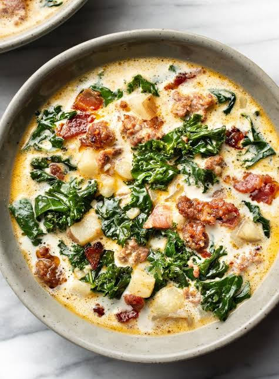

Home Page
Recipe List
Soup Recipe

Description
A hearty, filling Zuppa Toscana recipe. Can be eaten either
as a side dish or an appetizer.
Ingredients List
- 1 pound spicy Italian ground sausage
- 4 tablespoons butter
- 1/2 white onion, diced
- 1 tablespoon minced garlic
- 6 cups chicken broth
- 2 cups water
- 4-5 yellow potatoes, cut into 1-inch pieces
- 3 teaspoons salt
- 1 tablespoon black pepper
- 2 cups heavy cream
- 4 cups chopped kale
- chopped bacon
Recipe Steps
- Sautee sausage 5-6 minutes until browned in a large pot.
Transfer to a plate and set aside.
- In the same pot, add butter and saute onions over medium heat until translucent.
Add garlic and saute for another minute
- Add chicken broth, water, potatoes, salt and pepper and boil.
Boil until potatoes are tender. Stir in kale and heavy cream.
Re-add the sausage to the pot. Taste and add salt and pepper if needed.
Add chopped bacon if desired.